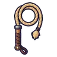
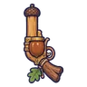

ลำธารซุงติด
ดูบนแผนที่และวิธีไป วางแผนฟาร์ม
ชั้นล่างในป่ากองไฟ · Lv 20–28
ชั้นล่าง / ดันเจี้ยน
มอนในแมพ (9)
| มอน | Lv | ธาตุ | โซน |
|---|---|---|---|
| 20–27 | น้ำ | กองซุงติดลำธาร | |
| 20–28 | น้ำ | กองซุงติดลำธาร | |
| 20–27 | น้ำ | กองซุงติดลำธาร | |
| 22–28 | น้ำ | กองซุงติดลำธาร | |
| 22–28 | น้ำ | ||
| 22–28 | น้ำ | กองซุงติดลำธาร | |
| 22–28 | น้ำ | กองซุงติดลำธาร | |
| 22–28 | น้ำ | กองซุงติดลำธาร | |
| 36–36 | น้ำ |
อุปกรณ์ที่ดรอปในแมพนี้
| ของ | โอกาสสูงสุด |
|---|---|
| 0.5% | |
| 0.5% | |
| 0.5% | |
| 0.25% | |
 แส้เชือกป่าน | 0.25% |
| 0.25% | |
| 0.25% | |
| 0.25% | |
| 0.25% | |
 ปืนพกคู่ลูกโอ๊ก | 0.25% |
| 0.25% | |
| 0.25% | |
| เกราะเหล็กพิทักษ์ป่า | 0.15% |
| 0.15% | |
| ชุดโจรแรคคูน | 0.15% |